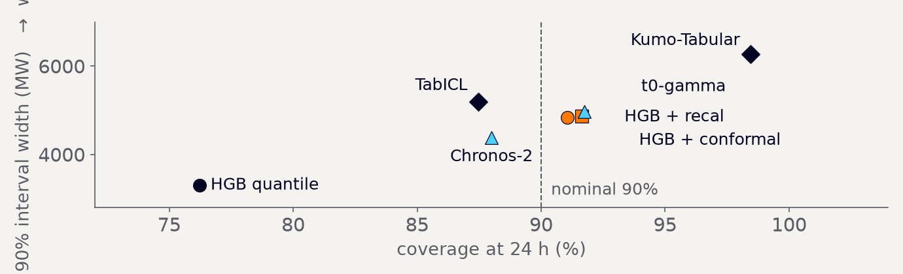

class: dark, middle, title-slide # TabICL vs scikit-learn for predictive uncertainty quantification <div class="authors"> Olivier Grisel & Jérôme Dockès<br/> <span class="sub">Probabl, the Tabular AI company</span> </div> <div class="tagline">Compute! Paris 2026 · 25 November 2026</div> ??? - 30 min slot (10:50-11:20, Auditorium, track "Models on Trial"): aim for ~22-25 min of talk, leave room for questions. - Jérôme ran the case study; I present it. Say that out loud. - The title stays as accepted on pretalx, even though the study now also covers Kumo, Chronos-2 and t0-gamma. --- ## Who did what - **Jérôme Dockès**: designed and ran the electricity load forecasting case study (scikit-learn, skrub, skore, TabICL, Kumo, Chronos-2, t0-gamma) - **Olivier Grisel**: presenting; machine learning engineer and scikit-learn contributor - Both at **Probabl**, *the Tabular AI company*: scikit-learn, skrub, skore .small[ Case study: [probabl-ai.github.io/skore-example-electricity-load](https://probabl-ai.github.io/skore-example-electricity-load/) · [github.com/probabl-ai/skore-example-electricity-load](https://github.com/probabl-ai/skore-example-electricity-load) ] ??? - TODO: confirm roles and wording for Jérôme's bio line. - Mention the case study is public and reproducible; every report on the index page has full provenance. --- ## The question > Tabular and time series foundation models (TFMs and TSFMs) > are *advertised* as giving well calibrated probabilistic predictions out of > the box. **Is that true?** Compared with a classical scikit-learn pipeline? And at what cost? - Simplicity of development - Accuracy of the median forecast - Calibration **and** sharpness of the 5-95% interval - Computational cost, fit and predict ??? - Straight from the abstract and the updated description: a time series forecasting problem, a grid of probabilistic regressions over horizons, tabular models (scikit-learn, TFMs) and TSFMs compared with time-structured features. --- ## The contenders | Model | Family | Output | Inputs | | --- | --- | --- | --- | | HGB mean | scikit-learn | mean | feature table | | HGB quantile | scikit-learn | 5 / 50 / 95% | feature table | | HGB quantile + recal / conformal | scikit-learn | 5 / 50 / 95% | feature table | | TabICL | TFM | mean, 5 / 50 / 95% | feature table | | Kumo-Tabular | TFM | mean, 5 / 50 / 95% | feature table | | Chronos-2 | TSFM | mean, 5 / 50 / 95% | history window (4000 h) + future covariates | | t0-gamma | TSFM | mean, 5 / 50 / 95% | history window + future covariates | | *RTE day-ahead* (baseline) | grid operator | point only, 24 h | proprietary | ??? - Sources: scripts/model_comparison/README.md and model_registry.py in the case study. - Chronos-2 is `amazon/chronos-2`; t0-gamma is `theforecastingcompany/t0-gamma` from The Forecasting Company; Kumo models come from `structured-data-models`. - Context length: Chronos-2 4000 h (from the run tag `chronos2_ctx4000`). - Recalibration and conformal correction are two post-hoc ways to fix the coverage of the raw HGB quantiles, both fitted on inner walk-forward folds. - The baseline is the ENTSO-E day-ahead load forecast for France, published by RTE, the grid operator. It is scored on the same test rows, at the 24 h horizon only. It is the number to beat to claim usefulness in operations. - TODO: check the wording on which models are open weights, as the abstract says "open source & weights". --- ## Forecasting as multi-horizon regression - Predict the load **1 h, 12 h and 24 h** ahead, with one model per horizon - **Walk-forward CV**, 8 folds, with a gap between train and test; test dates are identical for every model - **Weather forecasts** as inputs, not the observed weather - Tabular models get a **feature table** built by the shared skrub pipeline - TSFMs get the **history window** and the future covariates directly ??? - Source: src/electricity_load_forecasting/pipeline.py (`make_data_op`) and splitter.py in the case study. - Same scoring for all models, so reports are comparable. --- background-image: url(assets/ts_features/frame_01.png) background-position: center background-repeat: no-repeat background-size: 100% 100% ??? - Start from the hourly load. Raw material: the national load, one row per hour (`resample`). Point at the daily double peak and at the weekend dip: that is what the lags will exploit. --- background-image: url(assets/ts_features/frame_02.png) background-position: center background-repeat: no-repeat background-size: 100% 100% ??? - Pick a prediction time and a horizon. One row of the training table = one prediction time p. The target is `load_mw.shift(-h)`. We repeat the construction for h = 1, 12 and 24 h. --- background-image: url(assets/ts_features/frame_03.png) background-position: center background-repeat: no-repeat background-size: 100% 100% ??? - Calendar features of the target time. 5 features computed on the *target* time, in Europe/Paris time: hour of day, day of week, day of year, year and public holiday flag. --- background-image: url(assets/ts_features/frame_04.png) background-position: center background-repeat: no-repeat background-size: 100% 100% ??? - Recent load lags. For h = 12 the most recent usable observation is p itself (= lag_12). Lags 1 to 11 would peek into the future, so they are not built. This is why the features are built per horizon. --- background-image: url(assets/ts_features/frame_05.png) background-position: center background-repeat: no-repeat background-size: 100% 100% ??? - Same clock hour, earlier days. Exploits the daily and weekly seasonality. `load_same_hour` adds lags 36 and 180: the same clock hour as p, one day and one week before. 17 load lags in total for h = 12. --- background-image: url(assets/ts_features/frame_06.png) background-position: center background-repeat: no-repeat background-size: 100% 100% ??? - Hourly changes of the load. `load_diffs`: lag_k - lag_(k+1) for k = h ... 22, so 11 features for h = 12. A tree cannot subtract two columns itself, so the differences are given explicitly. --- background-image: url(assets/ts_features/frame_07.png) background-position: center background-repeat: no-repeat background-size: 100% 100% ??? - Load now versus earlier loads. `load_diffs` adds lag_h - lag_24, lag_48, lag_168 and `load_same_hour` adds lag_h - lag_36, lag_180: 5 more features, 16 load differences in total. --- background-image: url(assets/ts_features/frame_08.png) background-position: center background-repeat: no-repeat background-size: 100% 100% ??? - Rolling median and IQR. median and IQR over 24 h and 168 h windows ending at p and at t - 24 h: 2 stats x 2 widths x 2 end points = 8 features. --- background-image: url(assets/ts_features/frame_09.png) background-position: center background-repeat: no-repeat background-size: 100% 100% ??? - Weather forecasts. Weather *forecasts* rather than observations: a forecast issued at least 24 h before the valid time is assumed available at p (day-1 forecast for h <= 18 h, day-2 above). One feature per city, 3 of 10 shown. --- background-image: url(assets/ts_features/frame_10.png) background-position: center background-repeat: no-repeat background-size: 100% 100% ??? - Rolling temperature means. 9 features per city (temperature at t + 8 rolling means) x 10 cities = 90 weather features: the biggest group by far. --- background-image: url(assets/ts_features/frame_11.png) background-position: center background-repeat: no-repeat background-size: 100% 100% ??? - National temperature changes. `temp_diffs`: change of the national mean temperature over 24 h, 168 h and h, and anomalies against its 24 h and 168 h means. Windows end at t and only forecasts valid by t are used. 5 features that combine the cities, which a tree cannot do itself. --- background-image: url(assets/ts_features/frame_12.png) background-position: center background-repeat: no-repeat background-size: 100% 100% ??? - One feature row per prediction time. Column names are abbreviated. `prediction_time` and `target_time` are dropped and everything is converted to floats: the tabular models see no timestamp, the time structure only lives in the features. These are the round-2 feature groups. --- background-image: url(assets/ts_features/frame_13.png) background-position: center background-repeat: no-repeat background-size: 100% 100% ??? - Slide p forward: a plain tabular dataset. Number of features per horizon: 163 (h = 1), 141 (h = 12), 110 (h = 24). Without the three feature groups: 129, 118, 102. Evaluation uses walk-forward CV with a gap between the train and test periods. --- background-image: url(assets/ts_features/frame_14.png) background-position: center background-repeat: no-repeat background-size: 100% 100% ??? - Same table, four tabular models. HGB mean: one model for the mean. HGB quantile: one model per quantile. TabICL and Kumo-Tabular (TFMs): `fit` just stores (X, y); prediction runs the pretrained transformer with the training table as context, and the TFMs can return the mean or quantiles. Two outputs: a point forecast (the mean) and a probabilistic forecast (the 5/50/95% quantiles). Kumo returns 999 quantiles, we keep 5/50/95%. --- class: dark, middle, section-slide # Point forecasts How far is the mean or the median from the load? --- ## A point forecast: one number per horizon One value for the load at *t + h*: the **median** (50% quantile) of the quantile models, the **mean** for `hgb_mean`. ```text MAE = mean |y - ŷ| in MW, the typical miss MAPE = mean |y - ŷ| / y in %, comparable across seasons ``` - Load swings from ~30 to ~90 GW: MAPE tells whether a miss is large *for that hour*, MAE what it costs in MW - Scored per horizon (**1 h, 12 h, 24 h**) on the test rows of the **8 walk-forward folds**, then averaged - **Baseline**: the grid operator's own **RTE day-ahead forecast**, available at 24 h only (MAE 1051 MW, MAPE 2.17%) ??? - Source: "Walk-forward CV comparison" of the case study, rows `mae__*` and `mape__*`: "MAE / MAPE use the median (point) prediction". - hgb_mean is HistGradientBoostingRegressor with squared error, the usual scikit-learn point forecaster. The other scikit-learn row is the median of the HGB quantile models. - The load range in the notes is an approximation of the French load; check it before saying it out loud. TODO: confirm min and max of the series. - ENTSO-E day-ahead load forecast for France, issued by RTE, compared with the actual load at the target time. --- ## Point forecast results: MAE and MAPE .num.tight[ | Model | MAE 1 h | 12 h | 24 h | MAPE 1 h | 12 h | 24 h | 24 h vs RTE | | --- | ---: | ---: | ---: | ---: | ---: | ---: | ---: | | HGB mean | 378 | 946 | 1036 | 0.79% | 1.93% | 2.12% | -1% | | HGB quantile (median) | 364 | 920 | 987 | 0.76% | 1.89% | 2.02% | -6% | | TabICL | 313 | 933 | 1094 | 0.65% | 1.89% | 2.25% | +4% | | **Kumo-Tabular** | **256** | **791** | **920** | **0.54%** | **1.62%** | **1.88%** | **-12%** | | Chronos-2 | 415 | 960 | 1089 | 0.87% | 1.98% | 2.24% | +4% | | t0-gamma | 273 | 935 | 1103 | 0.57% | 1.93% | 2.26% | +5% | | *RTE day-ahead (baseline)* | – | – | *1051* | – | – | *2.17%* | – | ] - **1 h**: Kumo-Tabular is best at **256 MW**, **30%** below HGB quantile (364 MW); t0-gamma and TabICL follow (273 and 313 MW) - **24 h**: the gap closes. Only Kumo-Tabular (920 MW, **-12%**) and HGB quantile (987 MW, **-6%**) beat the **operator** (1051 MW); the others are within **+5%** .small.muted[8 folds pooled; the operator forecast exists at 24 h only. Tabular models (HGB, TFMs): features of the previous section, with the diff groups. TSFMs: history window and covariates.] ??? - Sources: docs/feature-engineering/round2_selected_groups.html for hgb_mean, hgb_quantile, tabicl, kumo_tabular (MAE 786.4, 757.0, 779.9, 655.5; MAPE 1.611, 1.554, 1.594, 1.344; per-horizon cells as well). The other rows come from the "Walk-forward CV comparison" table of docs/model-comparison-forecast (chronos2_ctx4000 821.3, t0_gamma 770.1; per-horizon cells from the same report). - Round 2 added load_diffs, load_same_hour and temp_diffs to every lagged-feature model. Default-feature MAE was 872 (hgb_mean), 859 (hgb quantile), 847 (TabICL), 688 (Kumo-Tabular): the diff features gave -10% (HGB mean), -12% (HGB quantile), -8% (TabICL) and -5% (Kumo-Tabular) on the average MAE. - Caveat from the round-2 report: the default-feature runs come from other commits, hosts and package versions, TabICL and Kumo are stochastic and there is one run per row. Differences of a few MW are noise. - t0-gamma and Chronos-2 ran with the day1-stitched weather (2026-11-23 rerun); paired differences against the older runs were not significant. - TODO: the paired-difference figure with block-bootstrap intervals before saying that one model beats another within the 757-786 MW pack. - 1 h: (364 - 256) / 364 = -30% for Kumo, (364 - 273) / 364 = -25% for t0-gamma, (364 - 313) / 364 = -14% for TabICL. - 24 h: HGB quantile 987 MW, HGB mean 1036, TabICL 1094, t0-gamma 1103, Chronos-2 1089, RTE 1051. The round-2 features gave TabICL a gain at 1 h and 12 h but not at 24 h (+4 MW, not significant). - Operator baseline: MAE 1051 MW, MAPE 2.17% at 24 h (no average, it has no 1 h or 12 h forecast). "vs RTE" is the 24 h MAE of the model divided by 1051, minus one: Kumo-Tabular 920.4 (-12%), HGB quantile 986.9 (-6%), HGB mean 1035.9 (-1%), TabICL 1094.1 (+4%), Chronos-2 1089 (+4%), t0-gamma 1103 (+5%). - Caveat: a day-ahead forecast is issued once a day, so its real lead time ranges over 12 h to 36 h; the report files it under 24 h. - RTE: the operator's forecast for time t is compared with the actual load at t; shown only at 24 h. - TODO: "-13%" is (655.5 - 757.0) / 757.0 = -13.4%. --- class: dark, middle, section-slide # Probabilistic forecasts From one number to a 90% prediction interval --- ## A 90% prediction interval from two quantiles - Predict **quantiles** of the load instead of one value: **5%**, **50%**, **95%** - The 5% and 95% quantiles delimit a **90% prediction interval**: the load falls **inside it 90%** of the time. Its **width** is the stated uncertainty <img class="fig" style="width: 78%" alt="Median forecast and 90% prediction interval on a synthetic load curve" src="assets/prob_forecast/interval.png" /> ??? - Figure: scripts/make_prob_forecast_figures.py. Synthetic curves, drawn so that the interval is wider at the daily peaks; 7 of 72 points fall outside, close to the expected 10%. - 90% is the nominal level: "calibrated" means that the observed frequency matches it over many predictions, not that every point is inside. - All the models of the study predict 5%, 50% and 95%, so that they are scored on exactly the same three quantiles even when they predict more (Kumo returns 999 quantiles, HGB was trained on 7 levels). --- ## Simplicity of development .cols[ .left-column[ ### scikit-learn ```python from sklearn.ensemble import ( HistGradientBoostingRegressor, ) # one model per quantile level models = { q: HistGradientBoostingRegressor( loss="quantile", quantile=q ).fit(X, y) for q in (0.05, 0.5, 0.95) } # + recalibration or conformal ``` ] .right-column[ ### TabICL ```python from tabicl import TabICLRegressor model = TabICLRegressor().fit(X, y) preds = model.predict( X_test, output_type="quantiles", alphas=(0.05, 0.5, 0.95), ) ``` ] ] .small[TSFMs skip the feature table: they take a history window and future covariates instead.] ??? - Source: src/electricity_load_forecasting/quantile_regressor.py and tabicl.py in the case study. - Point: TabICL is simpler for quantiles (no per-quantile models, no crossing quantiles to sort). The feature engineering is the same for the tabular models; the skrub DataOp does it for both. - TODO: mention hyper-parameter tuning budget on the HGB side (Optuna in scripts/tuning/). --- ## What is a *good* probabilistic prediction? - **Calibration**: a 90% interval contains the truth ~90% of the time (coverage, reliability diagrams) - **Sharpness**: among calibrated predictors, narrower intervals are better - **Strictly proper scoring rules** reward both at once: *pinball loss* (and its D² variant) for quantiles - Always evaluated on **left-out data**, here with time-ordered CV .placeholder[TODO: one figure: a calibrated-but-useless vs sharp-but-overconfident interval] ??? - Key message: coverage alone is gameable (infinitely wide intervals), width alone is gameable (zero width): scoring rules combine both. --- ## The pinball loss ```text L_τ(y, q) = τ · (y - q) if y ≥ q (q too low) = (1 - τ) · (q - y) if y < q (q too high) ``` <img class="fig" style="width: 78%" alt="Pinball loss for tau = 5%, 50% and 95%" src="assets/prob_forecast/pinball.png" /> - Minimised by the **true τ-quantile**: rewards calibration **and** sharpness - In **MW**; τ = 50% is half the MAE, so we average **τ = 5% and 95%** ??? - Source for the choice of levels: pareto.html and the round-2 report, "Pinball is the mean over the 5% and 95% levels"; the 50% level is already captured by MAE and MAPE. - At τ = 5%, putting q above the truth costs 0.95 per MW, below it only 0.05: the loss pushes q down until 5% of the observations are below it. - D² pinball (used in the comparison table of the case study) is the skill score 1 - L(model) / L(constant quantile of y_true), 1 is perfect, 0 is a constant forecast; it is `sklearn.metrics.d2_pinball_score`. - Figure: scripts/make_prob_forecast_figures.py. --- ## Pinball loss results 24 h horizon, mean of the 5% and 95% pinball losses .num.tight[ | Model | Pinball loss (MW) | vs HGB quantile | | --- | ---: | ---: | | HGB quantile | 169.0 | – | | HGB quantile + recal | 156.8 | -7% | | HGB quantile + conformal | **155.7** | **-8%** | | TabICL | 171.0 | +1% | | Kumo-Tabular | 160.7 | -5% | | Chronos-2 | 160.8 | -5% | | t0-gamma | 174.2 | +3% | ] - The **corrected HGB quantiles** are best: **156 MW**, about **-7%** vs raw HGB - **Kumo-Tabular** and **Chronos-2** follow (161 MW); TabICL and t0-gamma do not beat raw HGB .small.muted[Tabular models: diff features. Chronos-2 and t0-gamma: saved safe-lead runs.] ??? - Source: pinball loss at 24 h, averaged over the 5% and 95% quantiles (uncertainty.row_loss on the pooled rows, 8 folds): raw_results/model_comparison/cv_comparison_forecast_fg3 for the tabular models; raw_results/model_comparison/cv_comparison_forecast for Chronos-2 and t0-gamma. The report only has the 24 h pinball as a d2 score, so these two rows are not the report's day-1 stitched runs. TODO: add those prediction files to raw_results and recompute. - The percentages are relative to the HGB quantile row, computed on the unrounded values. - Recalibration and conformal are post-hoc corrections of the HGB quantiles; they multiply the fit time by about 4.6 (HGB q7 2050 s fit vs 9546 s recal, 9508 s conformal, diff features). - Per horizon, round 2: HGB quantile 93 / 175 / 186 MW (1 h / 12 h / 24 h) before and 63 / 160 / 169 after the new features; TabICL 46 / 145 / 171; Kumo-Tabular 38 / 129 / 161. - TODO: paired-difference intervals before claiming a ranking inside the 156-171 MW range. --- ## Results: coverage and width of the 90% interval 24 h horizon, nominal coverage 90%. Tabular models: with the diff features .cols[ .left-column[ .num[ | Model | Coverage | Width (MW) | | --- | ---: | ---: | | HGB quantile | <span class="cov-red">76.2%</span> | 3299 | | HGB quantile + recal | <span class="cov-green">91.1%</span> | 4843 | | HGB quantile + conformal | <span class="cov-green">91.6%</span> | 4868 | | TabICL | <span class="cov-orange">87.5%</span> | 5185 | | Kumo-Tabular | <span class="cov-orange">98.4%</span> | 6265 | | Chronos-2 | <span class="cov-orange">88.0%</span> | 4373 | | t0-gamma | <span class="cov-green">91.7%</span> | 4974 | ] .small.muted[Coverage: green 90-93%, orange 87-90% or above 93%, red below 87%] ] .right-column[ - Raw HGB quantiles are **over-confident** at 24 h: **76%** coverage for 90% - **Recalibration** and **conformal** bring HGB to **~91%**, but the intervals are **~1.5× wider** (4840 vs 3300 MW) - **Kumo-Tabular** over-covers (**98%**) with the widest intervals (6265 MW) ] ] ??? - Source: `coverage_90__24h` and `width_90__24h` of the diff-feature comparison (raw_results/model_comparison/cv_comparison_forecast_fg3, scored with compare_predictions.py): hgb_quantile_q7 76.23% / 3299 MW, recal 91.05% / 4843, conformal 91.64% / 4868, tabicl_n8_full 87.47% / 5185, kumo_tabular 98.45% / 6265. - Chronos-2 and t0-gamma are from the comparison report at 24 h (day-1 stitched runs, no lagged features): Chronos-2 88.0% / 4373 MW, t0-gamma 91.7% / 4974 MW. Their prediction files are not in raw_results: the saved default-weather files give Chronos-2 87.7% / 4405 MW and t0-gamma 92.1% / 5088 MW at 24 h. TODO: add the day-1 stitched prediction files to raw_results. - Read it together with the pinball slide: wide intervals buy coverage. - TODO: add the reliability diagram from calibration.html. --- ## Coverage against width, 24 h On the line, and low: calibrated, and sharp. <p></p> .small.muted[Tabular models: diff features. Chronos-2 and t0-gamma: the comparison report.] ??? - Same sources and the same numbers as the previous slide. - Read it as a trade-off. Raw HGB is the narrowest and far left of 90%. Recalibration and conformal correction land on the line and widen the interval by about 1500 MW. Chronos-2 is the narrowest model close to the line. Kumo-Tabular is the widest and over-covers, at 98%. --- ## Computational cost Summed over the 8 CV folds .num.tight[ | Model | Fit + predict | Predict only | | --- | ---: | ---: | | HGB quantile | 34 min | < 1 min | | HGB quantile + recal | 2 h 39 min | < 1 min | | HGB quantile + conformal | 2 h 39 min | < 1 min | | TabICL | 11 min | 9 min | | Kumo-Tabular | 24 min | 24 min | | Chronos-2 | 52 min | 52 min | | t0-gamma | 18 min | 18 min | ] - **TFMs and TSFMs are inference-bound**: all the cost is at predict - Predicting with them costs about **50× to 270×** the HGB quantile predict time - The HGB corrections multiply its **fit** time by ~4.6 ??? - Sources: the per-fold timings (scores CSV, summed over folds) of the diff-feature runs in raw_results/feature_engineering/round2_selected_groups (HGB, TabICL, Kumo-Tabular) and of the comparison report (Chronos-2, t0-gamma, from pareto.html). Exact seconds: HGB quantile 2062 s total (2050 s fit, 11.6 s predict); HGB recal 9559 s, conformal 9520 s; TabICL 632 s (558 s predict); Kumo-Tabular 1439 s (1435 s predict); t0-gamma 1050 s; Chronos-2 3106 s. Predict ratios against HGB's 11.6 s: TabICL 48x, t0-gamma 90x, Kumo-Tabular 124x, Chronos-2 268x. - TODO: the HGB quantile fit is slower than TabICL's whole run here. Check the HGB config before presenting this. - The tabular times are the diff-feature runs, the same features as the results on the other slides. - TODO: hardware differs. The case study runs the TSFMs with `--device cuda`, the tabular models without. Say so on the slide or normalise it. --- ## Read the comparison with care - **Weather**: every model gets weather *forecasts*, not observations: day-1 up to 18 h, day-2 beyond - **Features**: the tabular models (HGB, TabICL, Kumo-Tabular) use the diff features in every result; the TSFMs take the raw load history and do not use them - **Baseline**: the RTE forecast exists at 24 h only, so it has no average and no quantiles - **Hardware**: not normalised across models (see cost slide) - **Scope**: one French load series, one 8-fold split, one set of settings per model ??? - Source: scripts/model_comparison/README.md, the paragraph on weather defaults. - Chronos-2 and t0-gamma ran with the day1-stitched weather (2026-11-23 rerun): the same day-1 / day-2 rule as the tabular models, for the history window and for the future steps. - TODO: say how large the paired differences are, using the block-bootstrap intervals from the report. --- ## Small vs large sample size Point forecast MAPE (average over horizons) vs amount of training history .num[ | History | HGB (mean) | TabICL (median) | | --- | ---: | ---: | | 3 months | 6.49% | **5.05%** | | 12 months | 2.02% | **1.90%** | | 24 months | 1.81% | **1.74%** | | all (26-47) | 1.67% | **1.65%** | ] - TabICL's advantage is largest with **little data** and vanishes with more - ...but its inference cost keeps growing with the context size .small.muted[Preliminary: this study confounds history length with seasonal coverage and has no uncertainty bars.] ??? - Source: docs/history-length/report/index.html, which is marked "Work in progress" (see results/history_length/WARNING.md in the repo). Do not present as definitive before Jérôme re-runs it. - Only HGB and TabICL are covered. TODO: the same sweep for Chronos-2, t0-gamma and Kumo, if it is feasible before the talk. --- ## Takeaways 1. Foundation models, tabular (TFMs) and time series (TSFMs), are **competitive with a scikit-learn baseline**; Kumo-Tabular was best here 2. **Calibration is not free**: raw HGB quantiles are over-confident (76% at 24 h); recalibration or conformal correction fix it at ~4.6× the fit time 3. Judge with **proper scoring rules**, not coverage alone 4. The price is **inference**: TFMs and TSFMs cost about 50× to 270× the prediction time of HGB quantile .todo[TODO] Revise once the paired-difference check and the HGB cost check are done. ??? - Keep these in sync with the final results. --- class: dark, middle, title-slide # Thank you <div class="authors"> Olivier Grisel & Jérôme Dockès<br/> <span class="sub">Probabl, the Tabular AI company</span> </div> - Case study reports: [probabl-ai.github.io/skore-example-electricity-load](https://probabl-ai.github.io/skore-example-electricity-load/) - Code: [github.com/probabl-ai/skore-example-electricity-load](https://github.com/probabl-ai/skore-example-electricity-load) - TabICL: [github.com/soda-inria/tabicl](https://github.com/soda-inria/tabicl) · scikit-learn · skrub · skore ??? - TODO: add contact details / QR code to the slides repository.